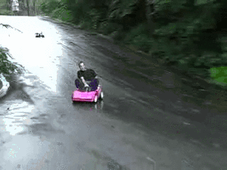

The First February
Alex Brenneman was born on February 21st, 1992 in Somerset, a small town in Pennsylvania. He was raised just across the
Pennsylvania/Maryland border in Grantsville, Maryland. As a child, Alex was intrigued by sports, mainly basketball.
Some say he could dribble a basketball from the day he was able to walk. As Alex got older, his
interests began to change to more "extreme" sports. When he turned 14 his parents, David and Laverna Brenneman,
took him to get his very first dirtbike. It wasn't long before he was riding all over his small town and
learning to jump this new toy.
The First Ride
Alex continued to ride his dirtbike until he outgew it. By this time, his interests
had begun to change again and cars entered the scene. Alex loved every aspect of them, their speed, size & most
importantly, the freedom that came along with it. He began to save for a car at age 15 by working for his dad. Alex
eventually got his first job in a metal fabrication shop. Working here, he learned a lot of useful skills.
Alex's main duties were not glamorous by any means. He spent most of his days sweeping the floors and doing the
yard work. It was not in vain, though. Finally, after about a year and a half of saving his money, Alex bought his first car. It was a
1999 Pontiac Sunfire and his first love.
The First Wreck
This love was unfortunately, short-lived. Alex had that car for another 2 years before he needed to get a new one. About 3 weeks after purchasing his
new car, he decided it would be fun to show off how "good" he was at
drifting to some friends. It didn't take long before
he realized he had made a very big mistake. As the car was sliding, Alex lost control and went careening into
a lagre tree. Alex watched as time slowed to a crawl. When the car hit the tree, he saw
the hood buckel and the air bags deploy. Luckily, everyone in the car was perfectly fine. Nowadays, Alex
no longer puts himself in situations like this; He has matured into a professional, young man... or maybe
he is just better at drifting now.
